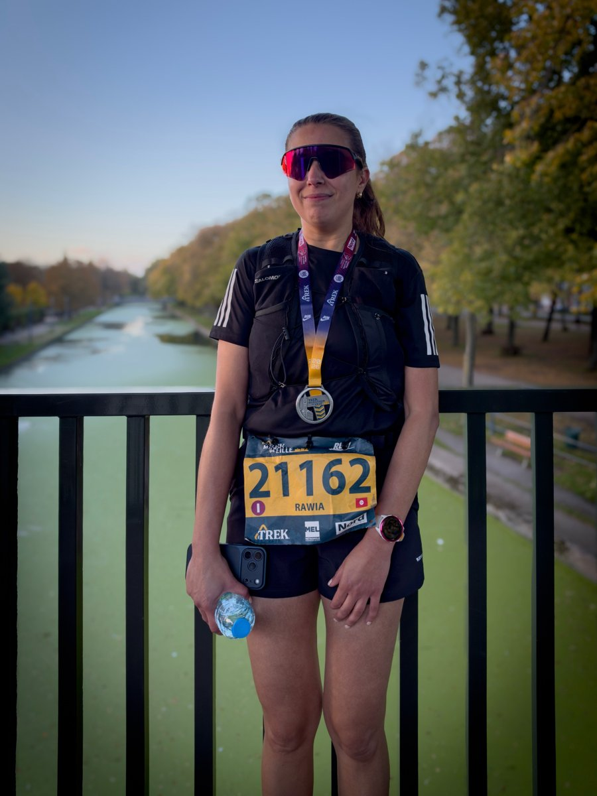

Rawia Mhiri
Edge AI & Computer Vision Engineering Leader
Lille, France
About
I am an AI and Computer Vision engineering leader with 11+ years of experience bridging research, advanced algorithms and production systems, with extensive hands-on experience spanning 3D reconstruction, Structure from Motion (SfM), Multi-View Stereo (MVS), photogrammetry and multi-camera systems.
My technical background includes 3D reconstruction from multi-camera and 360° camera systems, depth cameras and mobile devices, as well as camera geometry, localization, visual odometry and 3D scene understanding.
My work expanded into deep learning and video understanding, covering object detection and tracking, human activity recognition, visual saliency, video denoising and video frame interpolation. More recently, I have worked on Vision-Language Models (VLMs), visual embeddings, encoders, similarity search and clustering for video understanding and retrieval.
A significant part of my work focuses on Edge AI: balancing model accuracy, latency, memory and compute constraints to turn research and prototypes into production-ready experiences across mobile and desktop platforms.
At GoPro, I lead work at the intersection of R&D and applied ML, turning Computer Vision and machine learning capabilities into real-world product experiences.
Featured
Edge AI and on-device object tracking for the GoPro Quik mobile experience.
Read the Qualcomm feature →Interview in Computer Vision News, March 2020.
Read the interview →Outside of Work
Beyond computer vision, I enjoy distance running. I am a marathoner, having completed five 10K races, two half marathons, and my first marathon in Lille in 2026. More races and challenges are ahead.

Contact
The easiest way to reach me is through LinkedIn.